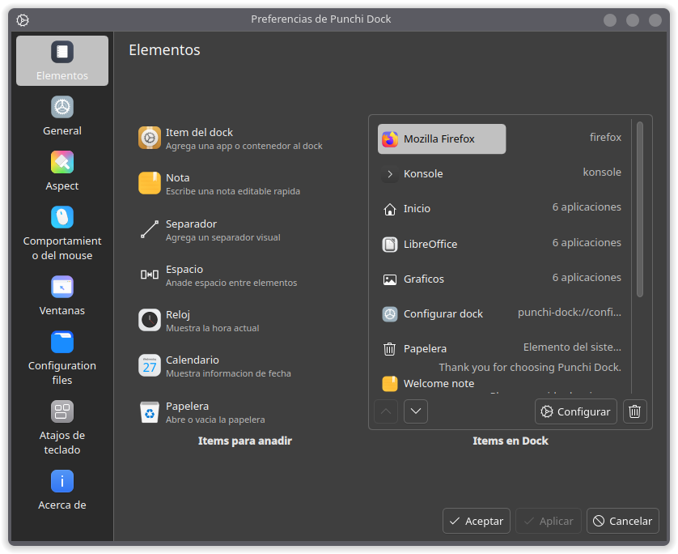
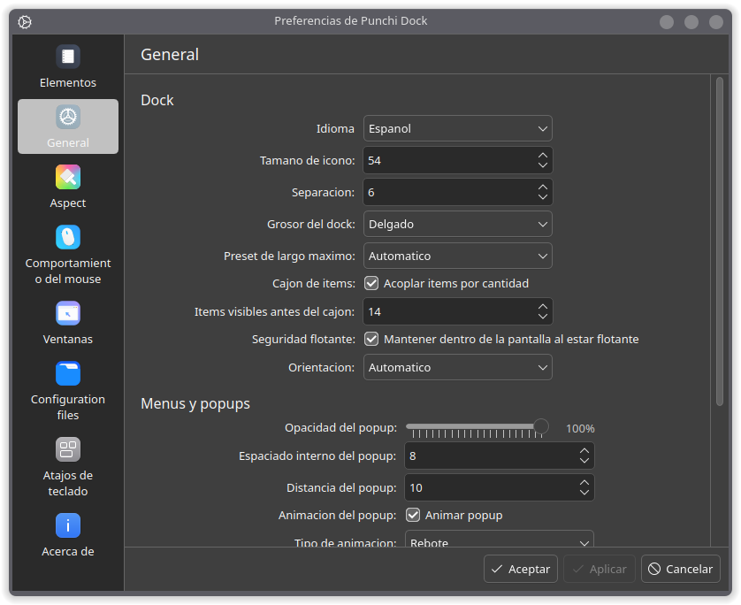
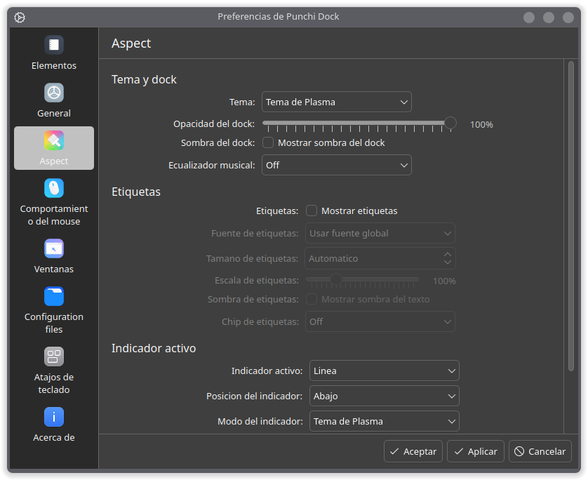
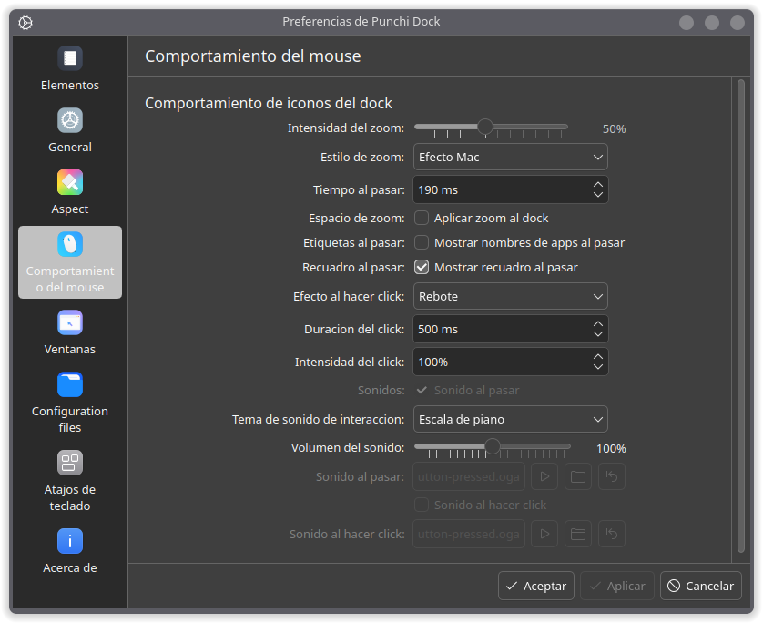
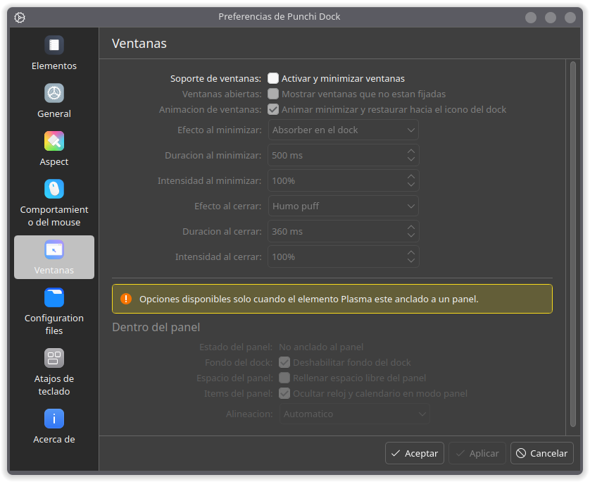
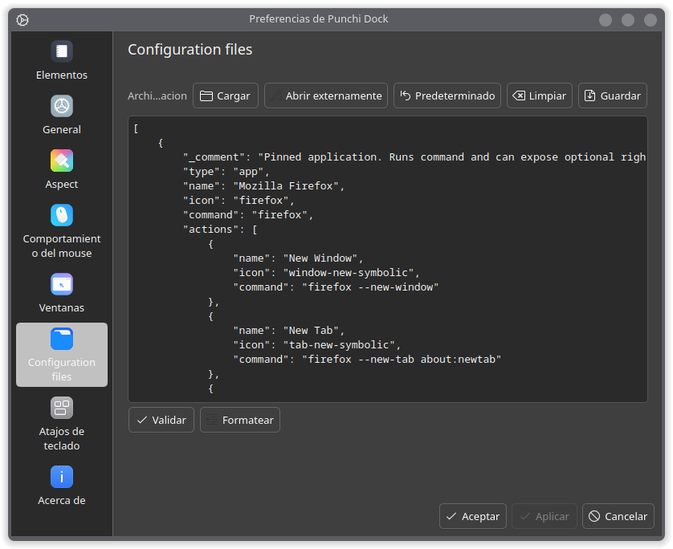
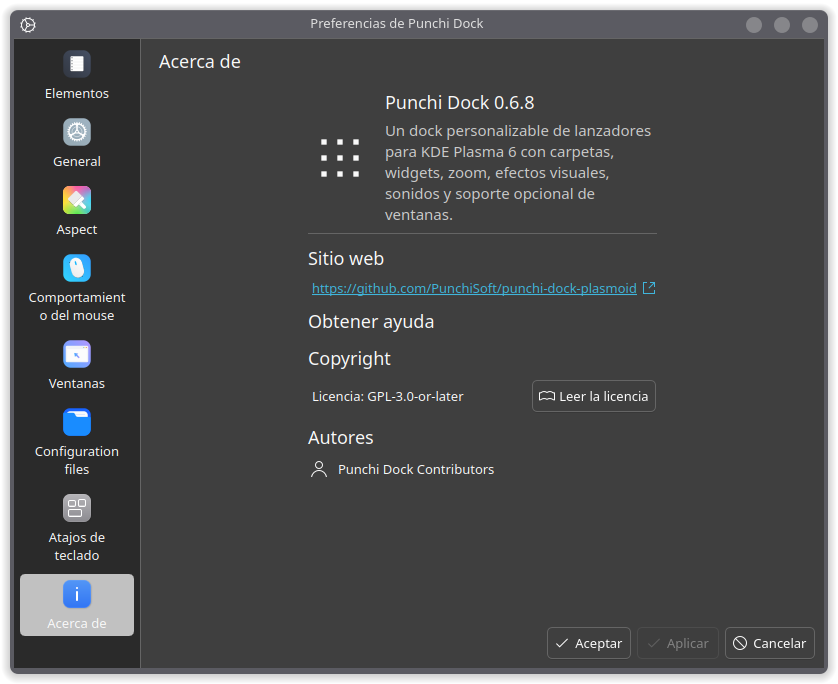
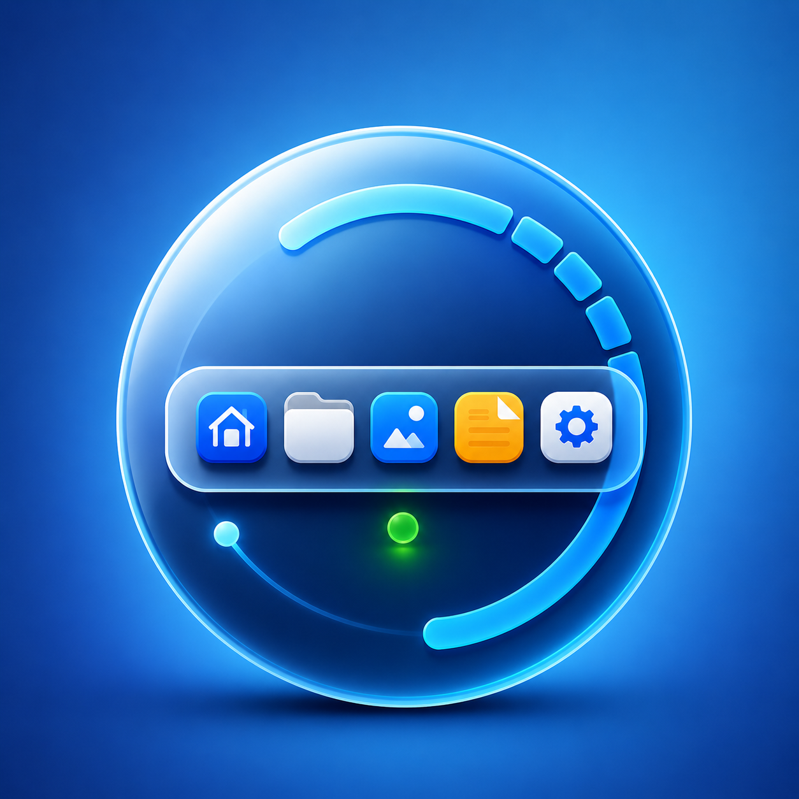

Punchi Dock sigue siendo un plasmoide ligero para KDE Plasma 6: lanzadores, contenedores, separadores, espacios, reloj, calendario, Papelera y soporte opcional de ventanas. La versión 0.7.0 no intenta convertirlo en otro gestor de tareas completo; se concentra en que el dock se sienta mejor integrado, más configurable y más cómodo para el uso diario.
Qué cambia en 0.7.0
Esta tanda parte desde la versión publicada 0.6.8 y justifica el salto a 0.7.0 porque no trae solo correcciones: incorpora controles visibles para el usuario, nuevos comportamientos de popups, opciones de carpetas y material de temas locales.
Los menús contextuales y popups ahora usan una base más sólida del tema Plasma para mejorar la legibilidad. También se redujo la translucidez excesiva, se ajustaron estados hover en items especiales y se retiró el puntero triangular experimental porque podía generar lag durante animaciones o cambios de tema.
La dirección es clara: mantener un dock práctico, visual y entendible, pero con más espacio para personalizar sin tocar archivos globales de Plasma.
Lanzadores, contenedores y notas rápidas
El dock conserva los lanzadores con nombre, icono, comando y acciones de clic derecho configurables. Los contenedores pueden armarse de forma manual, desde carpetas del sistema o desde categorías de aplicaciones KDE, con popups en grilla, lista, radial y abanico.
En esta versión aparecen nuevas opciones para mostrar u ocultar acciones generales del clic derecho, incluyendo Añadir nota rápida y Configurar Punchi Dock. La nota rápida puede agregarse directamente desde el menú del dock sin abrir toda la ventana de configuración.


Temas locales
La novedad más visible es el soporte inicial de temas locales para fondos, separadores y bordes del dock usando archivos SVG o PNG desde la carpeta del usuario:
~/.config/punchi-dock/themes/Cada tema puede tener su propio theme.json, una textura de fondo, una imagen de separador y un borde o extremo reflejado. Los modos disponibles incluyen stretch, tile, repeat-x, repeat-y, mirror y blank. La versión incluye muestras como Platform, Excite, Wood Shelf y debug.
~/.config/punchi-dock/themes/bricks/
theme.json
background.svg
separator.png
edge.pngPara crear temas conviene usar fondos de 250x250, separadores de 50x250 en dock horizontal o 250x50 en dock vertical, y bordes de 250x250. El botón de recarga de temas vuelve a listar, recarga el tema seleccionado y fuerza a QML a leer los assets actualizados sin reiniciar Plasma.

Carpetas radial y abanico
Las carpetas ganan controles más precisos. La vista radial ahora puede configurar fondo o aro radial, círculos de iconos y distancia radial. La vista abanico separa mejor su geometría, permite ajustar apertura y diámetro virtual, y mejora su posicionamiento en docks flotantes horizontales y verticales.
Esto hace que los contenedores sirvan no solo como listas ordenadas, sino también como accesos visuales rápidos para categorías de trabajo, sistema, desarrollo, multimedia o utilidades frecuentes.
Mouse, sonidos y animaciones
Punchi Dock mantiene zoom clásico, parabólico y estilo Mac, con control de intensidad y etiquetas al pasar. En la interacción también aparecen animaciones de clic como sacudida, rebote, doble rebote, giro, caída dominó e impacto lateral.
Los temas de sonido de interacción incluyen piano, estilo retro platform, mushroom platform, flauta, guitarra y violín. El ecualizador visual queda como extra opcional: reacciona a los sonidos de Punchi Dock, no captura audio del sistema ni usa el micrófono.


Ventanas y panel
El soporte de ventanas sigue siendo opcional. Punchi Dock puede activar, minimizar, cerrar, anclar y desanclar ventanas, además de mostrar un popup ligero con título, icono, estado activo y botón de cierre. Las miniaturas vivas todavía no están activadas porque los experimentos anteriores dependían de módulos internos o no disponibles del gestor de tareas de Plasma.
La integración con panel también se mantiene: fondo ocultable, relleno de espacio libre, alineación de contenido y opciones para evitar repetir reloj o calendario cuando el dock vive dentro de un panel de Plasma.
Rendimiento e iconos
Al anclar aplicaciones, la búsqueda de iconos ya no espera recorridos recursivos pesados cuando el archivo .desktop entrega un nombre usable. El selector prioriza el tema actual, sus herencias y hicolor; Flatpak y pixmaps se resuelven de forma más acotada cuando se detecta una app Flatpak o cuando el flujo lo necesita.
Es un cambio pequeño en apariencia, pero importante en sensación: menos bloqueo al fijar apps nuevas y menos trabajo innecesario cuando Plasma ya ofrece la información correcta.


Instalación local
Punchi Dock se puede instalar para el usuario actual mediante el paquete .plasmoid del release o desde una copia local del repositorio:
git clone https://github.com/PunchiSoft/punchi-dock-plasmoid.git
cd punchi-dock-plasmoid
chmod +x install-plasmoid.sh
./install-plasmoid.shPara generar un paquete instalable localmente:
chmod +x build-plasmoid.sh
./build-plasmoid.shEl paquete queda en dist/punchi-dock.plasmoid. El ID del plasmoide es org.kde.plasma.punchi-dock, la versión documentada aquí es 0.7.0 y el mínimo declarado para Plasma es 6.0.
Límites claros
Punchi Dock no usa xdotool, wmctrl ni xprop, y no modifica archivos globales de Plasma. También mantiene fuera las miniaturas vivas por ahora, priorizando un popup de ventanas más ligero y seguro.
Las próximas actualizaciones deberían concentrarse en pulir todavía más el comportamiento de ventanas dentro del dock: detección, activación, minimizado, items temporales y anclado, junto con limpieza interna del código para mejorar mantenimiento y rendimiento.

Para quién es
Punchi Dock encaja bien si quieres un dock visual para ordenar accesos frecuentes, agrupar herramientas, probar temas locales, usar pequeños módulos internos y mantener una interacción opcional con ventanas abiertas sin abandonar el estilo de KDE Plasma.
Como proyecto PunchiSoft, mantiene una idea sencilla: hacer más amable el escritorio Linux con herramientas concretas, configurables y honestas sobre su alcance.